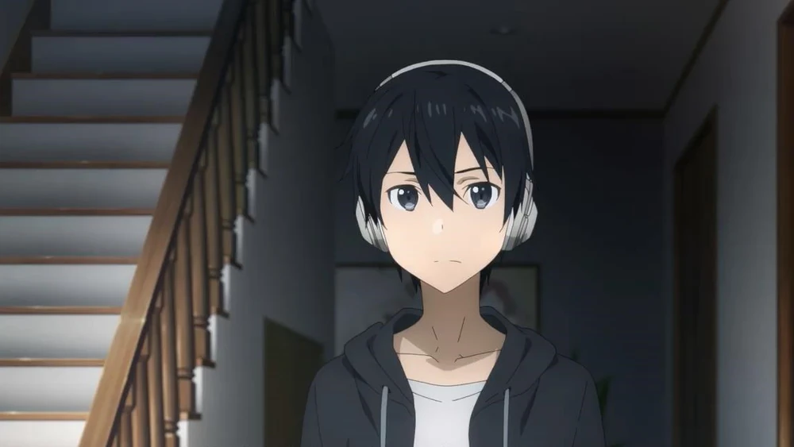

Kazuto Kirigaya (Kirito)
Kazuto Kirigaya, conocido como Kirito, es el protagonista principal de Sword Art Online. Es un jugador experimentado en VRMMORPG y fue uno de los primeros en adentrarse en el mundo virtual de Aincrad. Kirito es valiente, determinado y experto en el combate, utilizando principalmente una espada como arma. A lo largo de la serie, se convierte en un jugador de élite y juega un papel crucial en la liberación de Aincrad. Es conocido por su cabello negro, sus ojos negros característicos y su determinación inquebrantable para proteger a sus amigos.